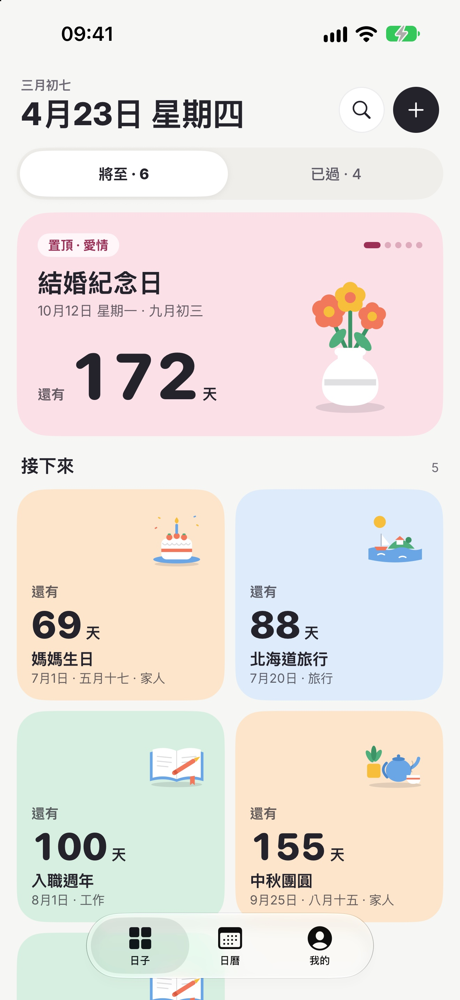
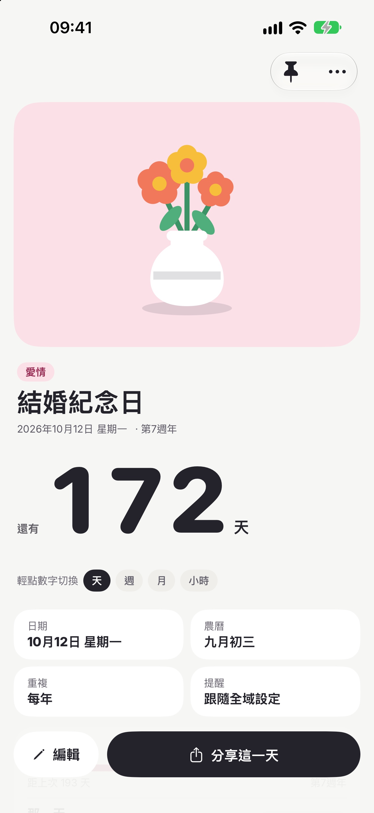
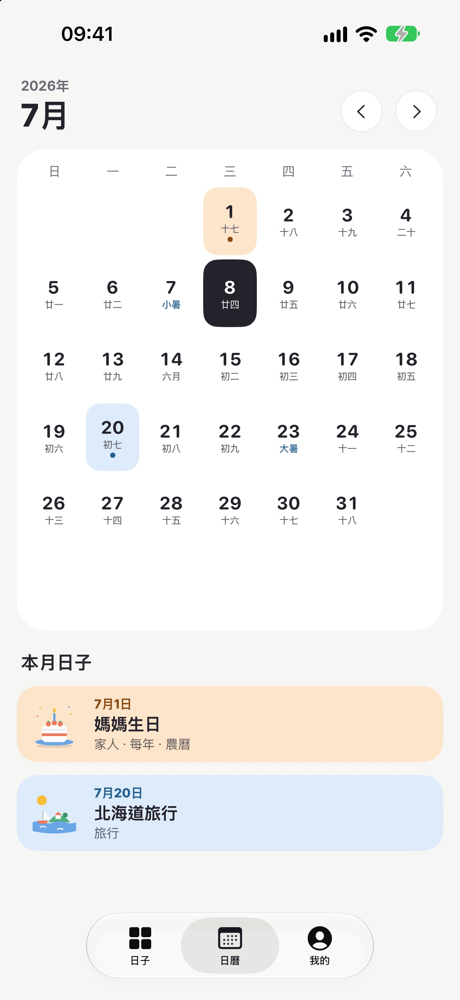
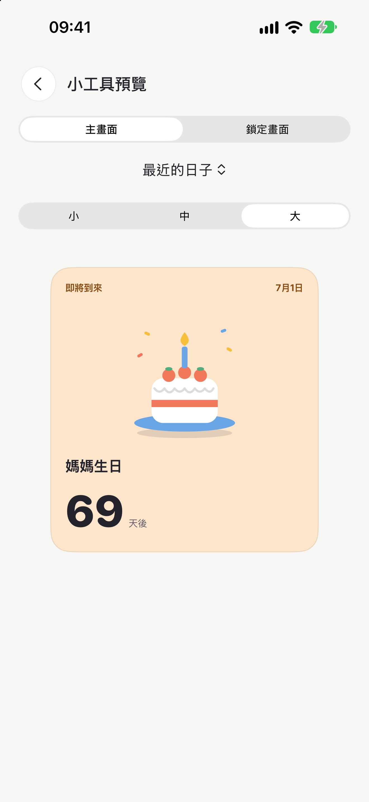
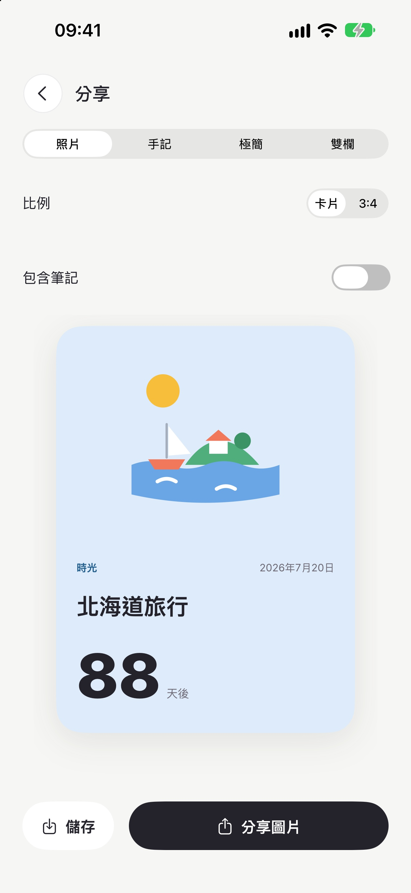
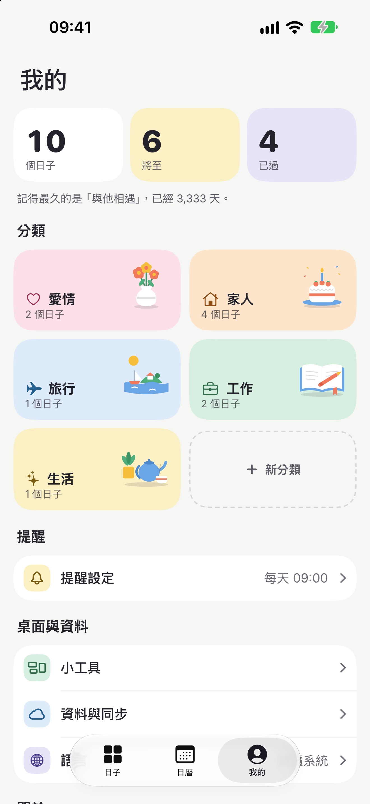
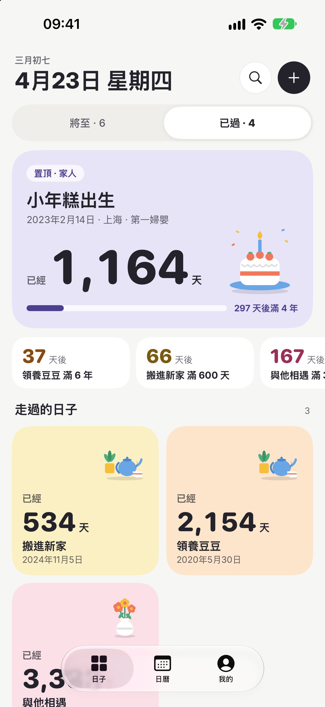

時光溫柔記住每一個重要的日子
記錄結婚紀念、寶寶出生、一場旅行、考試倒數。未來的值得期待，過去的可以回望。
即將登陸 App Store
免費 · iPhone · iOS 17 以上

試一試
離那一天，還有多少天？
填一個日子，看看時光怎麼替你數。
結婚紀念日
2019年10月12日
—
功能
把重要的日子放在主畫面，溫柔提醒，從容相聚
-
將至與已過
首頁分成兩面：「將至」為還沒到的日子倒數，最近的五個排在最前；每年的日子剛過去的一週裡，首頁還會留著它，方便你寫下這一天。不重複的日子過去以後，在「已過」裡一天天正數。
2面
-
農曆與節氣
按國曆或農曆每年重複。日曆裡標出農曆日期、二十四節氣和傳統節日，農曆支援 1900 至 2100 年。
24個節氣
-
輕點切換單位
在日子詳情裡輕點數字，就在天、週、月、小時之間切換。下面列出這個日子的節點：每年的日子有上一次和下一次週年；已過的日子有下一個整數紀念，1000 天以內每滿 100 天，之後每滿 500 天，或者滿一整年。
4種單位
-
封面插圖
每個日子都是一張分類顏色的卡片。配一張自己的照片，或從扁平插圖裡挑一張；新建的日子會依分類先配好封面。
12張插圖
-
貼心提醒
提前 7 天、3 天、1 天或當天提醒，時間自選。每日問候和時光回憶可以分別開啟。
7 · 3 · 1天前提醒
-
小工具
主畫面小、中、大三種尺寸用和 App 裡一樣的彩色卡片，鎖定畫面另有三種樣式。每個小工具都可以單獨選一個日子。
6種樣式
-
分享卡片
照片、手記、極簡、雙欄四種範本，可以匯出 3:4 直圖。筆記預設不會出現在圖片上。
4種範本
-
自訂分類
在「我的」裡，除了愛情、家人、旅行、工作、生活，還能新增自己的分類，圖示和顏色自己挑。
5種顏色
-
iCloud 同步
日子、分類和照片透過你自己的 iCloud 在裝置間同步。誤刪的日子在你的每台裝置上保留 30 天，可以還原。
30天內可還原
截圖
在 iPhone 上






0